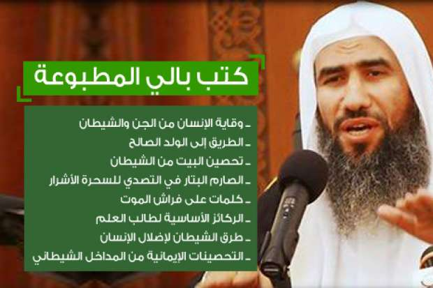
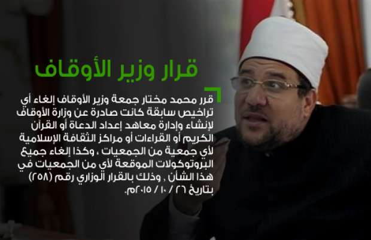
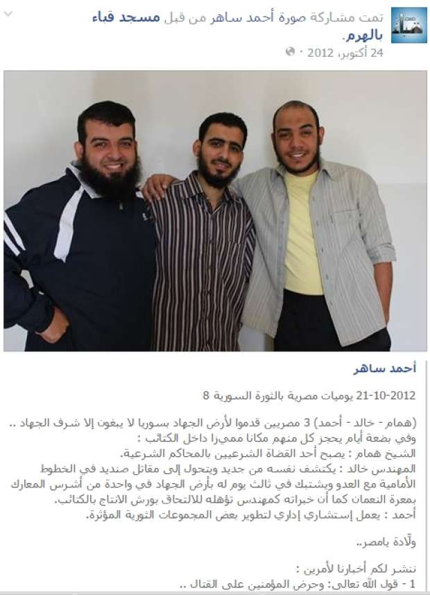
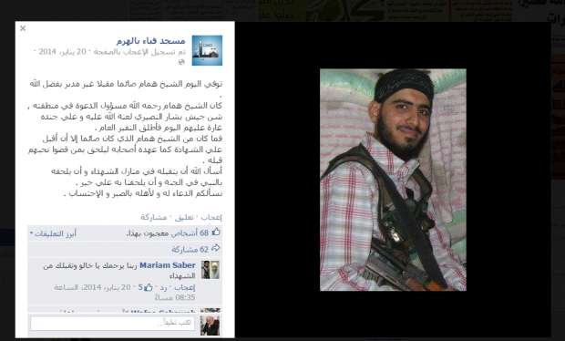
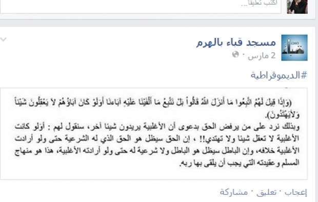
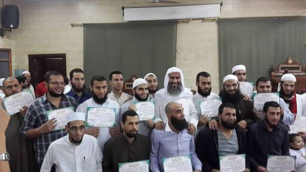
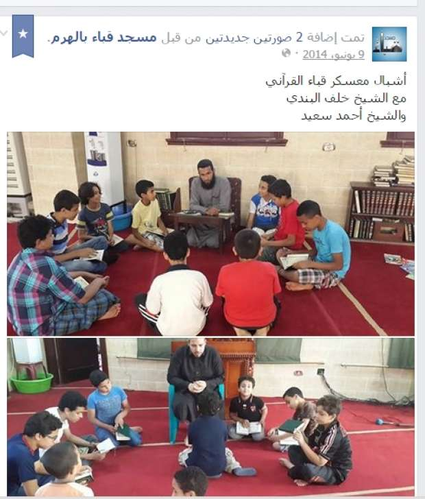

أحدث الأخبار
- القضاء الإداري يقضي بحل اتحاد الكرة وبطلان الانتخابات الأخيرة
- مقتل 3 أشخاص وإصابة 3 آخرين في حادث مروري بالبحيرة
- وزير الخارجية يجري اتصالاً مع رئيس المجلس الرئاسي الليبي
- عاصمة مصر تتجه لزيادة سكانية نصف مليون العام الجاري
- باولو يقود هجوم الزمالك أمام رينجرز في دوري الأبطال
- المالية تعفي المطاعم غير السياحية من ضريبة القيمة المضافة بشروط
- "القضاء الإداري" يلزم الجامعة الأمريكية بتحصيل مصروفاتها بالجنيه المصري
- البورصة ترتفع بنسبة 0.52% في نهاية التعاملات
السم والعسل: شبكات دعاة تستغل مساجد وجمعيات في تفريخ الدواعش
بالي يلقي احد الدروس بمسجد قباء- صوره من صفحته على فيس بوك
إذا أردت أن تضع قدمك على بداية الطريق لتبني فكر تنظيم الدولة الإسلامية "داعش" فالمهمة بسيطة. كل ما عليك التوجه الى أحد معاهد إعداد الدعاة التي تعمل من خلال جمعيات أهلية تخضع لإشراف وزارة التضامن، وتنشر فكر التطرف والاقصاء تحت غطاء قانوني من خلال دورات تمثل "مفرخه للدواعش" حسب وصف أستاذ بجامعة الازهر.
وتقدم هذه الدورات في تلك الجمعيات أو في مساجد تابعة لوزارة الأوقاف ورغم قرار وزير الأوقاف رقم 258 سنة 2015 بإلغاء تراخيص معاهد إعداد الدعاة التابعة للجمعيات الأهلية. إلا أن معاهد منها لازالت تعمل.
ويكشف هذا التحقيق، من خلال ست تجارب معايشة لحضور الدورات وتدريس محتواها للغير، وتتبع نشاط هؤلاء الدعاة عبر الانترنت ووسائل التواصل الإجتماعي، كيف يعملون من خلال شبكة دولية، ويمزجون في الدورات بين الدين والسياسة، ويروجون لأفكار مثل تحريم الجامعة لسماحها بالاختلاط، وتحريم مشاهدة التليفزيون، والتحريض ضد المسيحيين والشيعة بل وباقي المجتمع، والترويج لجماعات مسلحة تعمل في سوريا.
ورغم إغلاق وزارة التضامن 1083 جمعية مخالفة لكن لازالت هناك جمعيات كثيرة تعمل بها معاهد إعداد الدعاة دون محاسبة ولا رقابة من وزارات الأوقاف أو التضامن أو الداخلية لأنه لاتوجد متابعة للتنفيذ من تلك الوزارات ولا من الأزهر أيضا حسبما يكشفه التحقيق.
بعيون نافذة، كانت المرأة الثلاثينية تتفقد النسوة المتشحات بالسواد في الجزء الخاص بالنساء في مسجد قباء بالهرم في محافظة الجيزة والمرخص من وزارة الأوقاف. توقفت نظراتها عندي، ودققت في أطراف أصابعي. آويت إلى ركن لتفادي نظرات تلك المرأة، لكن صاحبتها لاحقتني لتجلس بجواري، ملقية التحية كنوع من الود، ثم تفحصت يدي ووجهي عدة مرات وتركزت نظراتها المستريبة على أظفاري الطويلة، ولم يشفع لي أني اتشح بثوب أسود مثل باقي النساء. وطلبت مني قص أظفاري باعتبار أن إطالتها أمر مخالف لتعاليم الإسلام. وفي اليوم التالي، لمبيتي معهن بالمسجد جاءت ومعها "قصافة" لتقوم بالمهمة بنفسها باعتبارها ضمن أعمال الأمر بالمعروف والنهي عن المنكر. أعملت "القصافة" بارتجالية شوهت الأظفار.
كان الموقف مؤشراً لأفكار استمعت إليها خلال معايشتي للمشاركات في دورات دينية لشبكة الداعية وحيد بالي ومعاونيه.
الإعلان عن الدورات يتولاه شُبَّان بتوزيع منشورات إعلانية أمام المسجد. ولا توجد أي شروط للالتحاق. تابعت "أصوات مصرية" دورات بالي منذ العام الماضي وحضرت ثلاث دورات، كل منها على مدى ثلاثة أيام. الأولى بمسجد قباء بالهرم، والثانية بمسجد الفتح في منشأة عباس بمحافظة كفر الشيخ في دلتا النيل، والأخيرة كانت عبر الإنترنت من خلال سماع بث مباشر على موقع وحيد بالي، الذي يصف نفسه بأنه داعية إسلامي معاصر.
داخل مسجد قباء، وفي الجزء المخصص للنساء، كانت مكبرات صوت تنقل أحاديث بالي وعدد من مساعديه يشاركون في تقديم الدورات من المكان المخصص للرجال.
استلزم حضور الدورة المبيت بالمسجد مع 50 مشاركة تتراوح أعمارهن بين عشر سنين و60 سنة تقريباً، منهن أجنبيات أتين أصلا للدراسة بالأزهر من دول مثل روسيا وأندونسيا وألبانيا وعرفن بدورات بالي عن طريق الدعاية التي ينشرها أتباعه.
وأثناء حضور دورة كفر الشيخ كان جيران المسجد يتحدثون عن بالي كشخص خدوم للأهالي.
تبني الفكر المتشدد كان واضحا من حديث الحاضرات في مسجد قباء وأغلبهن تعليمهن متوسط، ولم يذهبن للجامعة التي قال بعضهن إنها حرام لأنها تسمح بالاختلاط بين الجنسين.
يبدأ اليوم الأول بترديد الأذكار عقب صلاة الفجر، ثم قراءة الكتب محل الإجازة، وبعضها يخص أئمة للوهابيين مثل محمد بن عبد الوهاب وابن عثيمين وغيرهما، وبعضها من تأليف بالي نفسه.

إطار لبعض كتب بالي المطبوعة
كتب تكفير
وعلى طريقة "دس السُم في العسل" يقوم بالي بتدريس كتب ومناهج تقرها الأوقاف فعليا، وبجانبها كتب من تأليفه على غير نهج الأزهر حسبما قال أساتذة ازهريون.
وعلى عكس ما ذكر بالي في دليله التعريفي –وهو كتيب صغير لتوضيح أنشطة معهده "الفتح للعلوم الشرعية"- من اتباعه للمنهج الوسطي والعلمي في آليات ومناهج معهده والكتب التي تُدَرْس، فإن أهم الكتب التى يدرسها، لم تحظ باجماع علماء السنة والجماعة، وانتقدها بعضهم واصفا إياها بالمبتدعة، ومنها كتاب "العقيدة الواسطية" لابن تيمية بشرح بالي، وكتاب التوحيد لمحمد بن عبد الوهاب، بحسب أساتذة بالأزهر ومنهم أحمد كريمة أستاذ الشريعة.
ويمثل معهد "الفتح للعلوم الشرعية" التابع لجمعية أنصار السنة المحمدية، والذي يوجد مقره فوق مسجد قباء، واجهة يستطيع من خلالها بالي وأتباعه ارتياد المساجد حيث كانت معاهد اعداد الدعاة تقدم الدروس. وما زال المعهد يعمل رغم قرار وزير الأوقاف رقم 258 بتاريخ 27 اكتوبر 2015 بإلغاء التراخيص السابقة التي صدرت عن الوزارة لإنشاء وإدارة معاهد إعداد الدعاة لأي جمعية من الجمعيات.

ويقرأ بالي خلال دروسه كتبا مثل (شرح العقيدة الواسطية) لابن عثيمين، وكتاب التوحيد لمحمد بن عبد الوهاب والذي يعتبره بالي وأتباعه "الإمام المجدد".
تعريف فضفاض للعدو
يستمر بالي في قراءة الكتب على الحضور حتى العاشرة صباحاً، حيث يتوقف التدريس لمدة ساعة يفترش خلالها الحضور ساحة المسجد لتناول الإفطار. وبعد صلاة الظهر، تحل فترة القيلولة التي ينام فيها الحضور في أنحاء المسجد حتى صلاة العصر، ثم تستكمل قراءة الكتب.
ويتخلل ذلك أناشيد دينية يرددها مشايخ تتعلق بالجهاد منها نشيد:"مسلمون مسلمون مسلمون حيث كان الحق والعدل نكون ..نرتضي الموت ونأبى أن نهون، في سبيل الله ما أحلى المنون"
ونشيد"سنخوض معاركنا معهم، وسنمضي جموعا نردعهم ونعيد الحق المغتصب وبكل القوة ندفعهم"
لم يكن هناك تعريف واضح للأعداء الذين يجري الحشد ضدهم، لكن تحدثت مشاركات عن تجريم المجتمع والإعلام لموافقته على عزل الرئيس السابق محمد مرسي المنتمي لجماعة الإخوان المسلمين.
وفي ختام الدورة حصل المشاركون على إجازة مكتوبة ومذيلة بتوقيع بالي، تشهد للدارس بإمكانية أن يدرس لغيره الكتب التي سمعها من بالي. ووزعت بعض الاجازات دون كتابة اسماء (على بياض).
بث خطاب يحرض على الكراهية
ويبث بالي العديد من الأفكار الاقصائية والمتطرفة التي صرح بها علنا مثلما حدث قبل مقتل أربعة من الشيعة وعلى رأسهم القيادي الشيعي حسن شحاتة في يونيو2013 . فقد كان بالي يحرض على مثل هذا الفعل لسنوات. وله فيديو على يوتيوب قبل الحادث بخمسة أشهر، يحرض فيه على محاصرة الشيعة وتتبعهم والإبلاغ عنهم.
وأثناء تتبع نشاط بالي في مطلع ديسمبر 2016، تبين أنه يقدم الدورات أيضا من خلال جمعية التسنيم والسلسبيل التابعة لوزارة التضامن. وقالت منى محمود المسؤولة عن الجمعية التي تشمل انشطتها معهدا لإعداد الدعاة حسب الترخيص من وزارة التضامن إن بالي أبرم اتفاقا مع الجمعية لتقديم دروس وإجازات من خلال المعهد. وأعلن بالي عن ذلك عبر صفحته على فيس بوك.
استخدام الانترنت
ويُقَدِم وحيد بالي نفسه حسب موقعه على الانترنت وصفحته الشخصية على فيس بوك على أنه داعية إسلامي معاصر، من مواليد محافظة كفر الشيخ عام 1963، حاصل على ليسانس آداب وتربية – شعبة اللغة العربية.
وتتلمذ بالي على يد كبار الوهابيين، ومنهم ابن باز، وابن عثيمين، والألباني. وحصل على إجازات عبر الهاتف من مشايخ منهم الهندي سلمان الحسيني الندوي، والسعودي أحمد بن منصور آل سبالك.
ويتواصل بالي عبر الانترنت مع زعماء تجمعات عابرة للحدود، ويتوزع قادتها على دول كالسعودية والهند وأفغانستان والكويت، وعلى رأسها الندوي الذي يتصدر اسمه الاجازات التي حصل عليها بالي.
وعبر صفحة "مسجد قباء بالهرم" تهتم مجموعة بالي بنشر أخبار المصريين ممن التحقوا بصفوف تنظيم الدولة الاسلامية (داعش) في سوريا وعرض لمهامهم وما يتقلدوه من وظائف داخل صفوف التنظيم. واعتادت مجموعة وحيد بالي نشر أخبار على الصفحة عن تدريبات ودروس بساحة المسجد.

صورة نشرتها صفحة مسجد قباء لمصريين انضموا لجماعات مسلحة في سوريا
ونشرت صفحة "مسجد قباء بالهرم" بتاريخ 21 أكتوبر 2012، خبرا عن توجه ثلاثة من المصريين إلى أرض سوريا "لا يبغون إلا شرف الجهاد"، وهم "أحمد وهمام وخالد". وفي ثلاثة أيام يحجز كل منهم مكاناً مميزاً داخل الكتائب، حيث يصبح همام أحد القضاة الشرعيين بالمحاكم الشرعية، بينما يصبح خالد مقاتلا ويخوض معارك بمعرة النعمان، وتؤهله خبرته كمهندس للالتحاق بورش الإنتاج بالكتائب، بينما أحمد يتحول إلى استشاري إداري لتطوير بعض المجموعات الثورية". وأعلنت نفس الصفحة "مسجد قباء بالهرم" بتاريخ 20 يناير 2014، عن وفاة همام، وهو وفقاً لما ورد بالصفحة المذكورة، فقد قتل "مقبلا غير مدبر" في غارة لجيش الرئيس السوري بشار الأسد، منوهة إلى أن الصفحة تهتم بنشر أخبار المقاتلين من باب التحريض على القتال.

خبر نشرته صفحة مسجد قباء عن مقتل مصري في صفوف الجماعات المسلحة في سوريا
ولدى سؤال وزارة الداخلية عن صفحات بالي ومؤيديه على الانترنت، نفى مصدر أمني بالوزارة طلب عدم نشر اسمه علمهم بأنشطة مخالفة لشخص يدعى وحيد بالي.
وبتتبع الصف الأول من مساعدي وحيد بالي، ومنهم عادل العزازي عبر صفحته الرسمية على "فيس بوك" وجد أنه يُحرم ألعاب "بلايستيشن التي تقوم على تقديس الصليب"، وألعاب تصميم كروت معايدة النصارى في عيدهم، والموسيقى.
أفكار المؤيدين
نبرة التشدد كانت واضحة في تعليقات متابعي الصفحة الذين أيدوا ما قاله عزازي.
وفي مسجد قباء نفسه كان واضحا أثناء حضور الدورة انتقال أفكار بالي وأتباعه إلى المؤيدين والمريدين.
مايسه محمد*إحدى الحاصلات على إجازة بالي، قالت عن حكم مشاهدة التلفزيون إن "ما يعرضه من مناظر ومشاهد من المحرمات، ويستوجب مقاطعته."
وقالت سمية أمين* بتحريم الذهاب إلى الجامعة لسماحها بالإختلاط، كما حرمت أخرى مشاهدة التلفزيون، وتحدثت عن تحريم الاحتفال بعيد الأم.

تعليق على صفحة المسجد ينتقد الديمقراطية
وخلال الدورات كان مسجد قباء يعج باعلانات "الدعوة السلفية" ذات المسحة السياسية. وقال أحدها ناقضا فكرة الديمقراطية "نرد على من يرفض الحق بدعوى أن الأغلبية يريدون شيئاً آخر سنقول لهم: أولو كانت الأغلبية لا تعقل شيئاً ولا تهتدي!، إن الحق سيظل هو الحق الذي له الشرعية حتى ولو أرادت الأغلبية خلافه، وأن الباطل سيظل هو الباطل ولا شرعية له حتى ولو أرادته الأغلبية، هذا هو منهاج المسلم وعقيدته التي يجب أن يلقى بها ربه".

بالي يتوسط بعض الحاصلين على إجازات في إحدى دوراته-صورة من صفحة بالي على فيس بوك
وحين اتصلت محررة أصوات مصرية عبر الهاتف لطلب ترتيب لقاء مع بالي لمواجهته بما توصل اليه التحقيق، رد ابنه الأكبر سليمان الذي يتولى ترتيب المقابلات وقال إن والده لا يقابل نساء ومن الممكن أن يجري رجل الحوار. لكنه لم يرد على اتصالات متكررة بعد ذلك.
تطبيق عملي
بعد معايشة دورات بالي، كانت الخطوة التالية هي تجربة رد الفعل على نقل مضمون هذه الدورات والإجازات للغير. وذهبت إلى مساجد تابعة للاوقاف لاختبار رد الفعل. ثلاثة مساجد في ثلاثة أماكن مختلفة بالمدن والقرى.
التجربة الأولى كانت بمسجد "الرحمة" في إحدى قرى محافظة الجيزة، وبعد صلاة العصر طلبت من القائم على المسجد الإعلان عن دورة في العقيدة. ودون أن يسألني عن هويتي أو صفتي، دعا إلى تجمع النساء والأطفال، وعلى مدى يومين تم اعطاؤهم الدورة وتسليمهم الإجازة.
بدأت الدورة بقراءة "البداية فى علم العقيدة" تأليف وحيد بالي على أطفال ذكور وإناث تتراوح أعمارهم بين خمس سنوات و12 سنة. وردد الأطفال بعدي، دون فهم ودون أن يسأل أحد أو يعترض أو يرفض أي معلومة يتم تلقينهم اياها.
لم يعترض أحد المشاركين في الدورة ولا أولياء أمورهم على فصل الذكور عن الإناث مع تعنيفهم وتحذيرهم من الاختلاط مرة أخرى، كما تم التفتيش على أظفارهم والتهديد بعقاب من يطيلها منهم، وتعنيف الفتيات الصغيرات اللاتي لا يرتدين الحجاب.
تكرر الأمر بأحد مساجد "الهرم" ومرة ثالثة بمسجد في حي إمبابة بمحافظة الجيزة، وكانت تلك الدورة لنساء بالغات، في ثلاثيات صحيح البخاري، بالاسناد المتصل من وحيد بالي إلى الإمام البخاري.
مواءمات سياسية
ويقول علي الجدة أستاذ العقيدة والفلسفة بجامعة الأزهر عن الكتب التي يدرسها بالي إنها "تختلف بشكل جوهري عن عقيدة الأزهر التي تؤمن بالوسطية، وتتحدث تلك الكتب عن الأسماء والصفات وتقول بحمل النصوص القرآنية على ظاهرها على عكس ما يؤمن الأزهر من تأويل النصوص، كما أنها تنص على شرك من يُصلي بأماكن فيها أضرحة أو قبور، بينما يجيز الأزهر ذلك."
واتهم أستاذ الشريعة بالأزهر أحمد كريمة، التيار الوهابي بمصر بصنع الدواعش قائلاً إن "القاعدة وطالبان وداعش.. جميعها خرجت من عباءة السلفية التى يُعد بالي أحد قادتها بمصر."
وأضاف "هؤلاء دخلاء على موائد العلوم الشرعية، ويتلقون دعماً من مؤسسات في بعض الدول العربية. وأكد أن بالي ليس لديه ما يؤهله ليكون داعية ولم يُجز من الأزهر. وقال إن السلفية في مصر تحميها المواءمات السياسية بين مصر والخليج، وشرهم سيزداد."
وأضاف كريمة أنهم حرموا الدستور وقالوا بكفر الديمقراطية وحقوق الانسان، وحرموا العلاقات الدولية، وكفروا رواد النهضة المصرية كالإمام محمد عبده، ويستهدفون استعداء أهل الكتاب.
أستاذ الشريعة بجامعة الأزهر قال"إن 60% من خريجي دورات اعداد الدعاة التي يديرها بالي دواعش وإنها تستهدف تجنيد الشباب، وهذه الدورات لتكفير المجتمع والغاء الازهر والصوفية، ولافتعال العداوة مع المسيحيين."

أطفال في إحدى دورات "معسكرات الأشبال" التي يقدمها مساعدون لبالي
المسؤولية ضائعة
وبمواجهة طايع جابر وكيل وزارة الأوقاف، قال إن بعض الجمعيات الأهلية منها جمعية أنصار السنة التى يتبعها بالي كانت لها مراكز ثقافية (معاهد) بالفعل، أغلقتها التضامن التي جعلت للأوقاف سلطة الإشراف على المناهج.
وبمواجهته بما يفعله بالي من خلال معهده الذي يوجد مقره فوق مسجد قباء بالهرم، قال جابر إن "صحن المسجد يتبع الأوقاف وهو ما نسيطر عليه فقط وقمنا بغلقه، أما ملحقات المسجد، فهي ملك الجمعيات الخيرية، وتخضع لمراقبة وزارة التضامن الاجتماعي."
لكن الدورة التي حضرتها أصوات مصرية كانت تجري بالفعل في صحن المسجد.
وقال جابر إن وزير الاوقاف أصدر القرار رقم 258 سنة 2015 بالغاء جميع التراخيص والبروتوكولات السابق اصدارها من الوزارة لأي جمعية سواء كانت أهلية أو خيرية.
ومن جانبه، قال أيمن عبد الموجود رئيس الإدارة المركزية للجمعيات الأهلية والاتحادات بوزارة التضامن إن جمعية أنصار السنة المحمدية لم يتم التحفظ عليها، وهي جمعية مركزية مقيدة بالوزارة برقم 61 لسنة 1971، ووفقاً لآخر تقرير مراجعة عن أعمال الجمعية لعام 2015 فإن نتيجة المراجعة عنها مرضية.
وعن جمعية التسنيم والسلسبيل التي مد بالي نشاطه اليها، قال عبد الموجود إن من الأنشطة التي تمارسها تلك الجمعية، وفقاً للائحة النظام الأساسي لها نشاط معهد قرآن-اعداد الدعاة- بعد موافقة الجهات المختصة أي الأوقاف.
وقال إنه تم التحفظ على 1083جمعية بها مخالفات تم حل بعضها وعمل مجالس ادارات للبعض الأخر، ليتبقى منها 500 جمعية على مستوى الجمهورية، تشرف عليها التضامن.
وأضاف أن معاهد الدعاة ليست مسؤولية التضامن وتُسأل عنها وزارة الأوقاف أو الأزهر ممثلا في مجمع البحوث الإسلامية، بناء على الكتاب الوارد لوزارة التضامن بتاريخ 19-10-2015، من مكتب وكيل الأزهر بتكليف أمين عام مجمع البحوث باتخاذ الاجراءات اللازمة كإغلاق المعاهد، والتنبيه على أي جمعية ترغب في مزاولة هذا النشاط أن تتقدم بطلب إلى مشيخة الأزهر، حيث ينص قانون الجمعيات 84 لسنة 2002، على أن أي جمعية تقوم بنشاط ما، عليها أن تحصل على ترخيص هذا النشاط من الوزارة التابع لها، وعليه فترخيص معاهد إعداد الدعاة يخص الأوقاف.
لكن محي الدين عفيفي الأمين العام لمجمع البحوث الإسلامية نفى اختصاص الأزهر أو المجمع بمراقبة معاهد إعداد الدعاة وقال إنها من اختصاص وزارة الأوقاف، وقال عفيفي إن الأزهر مؤسسة علمية معنية بالشأن الإسلامي، وما قدمناه لتلك المعاهد يقتصر فقط على مناهج دراسية تتفق مع ما يقرره الأزهر عقيدة وفقهاً وحديثاً وتفسيراً. وقال إن من يخالف ذلك بتدريس أراء وهابية يُعد مخالفاً ويغلق معهده والأوقاف المنوط بها ذلك الدور.
ومن جانبها نفت وزارة الداخلية مسؤوليتها عن مراقبة المساجد. وقال مسؤول بالوزارة إن مراقبة المساجد وملحقاتها من معاهد إعداد الدعاة والجمعيات الخيرية من مهام وزارة الأوقاف لا الداخلية.
وصرح مصدر أمني مسؤول بادارة تكنولوجيا المعلومات بوزارة الداخلية، بأن الأدارة لا تعرف أحدا باسم وحيد بالي، ولم يتم ضبط أي صفحات خاصة به أو لأتباعه على شبكات السوشيال ميديا.
ووسط تنصل الوزارات الثلاث ومجمع البحوث الإسلامية من المسؤولية، لن يكون غريبا أن تظل مثل هذه الشبكات تبث أفكارها المتطرفة والاقصائية وهي آمنة من الملاحقة والمساءلة.
*اسم مستعار
أنجز التحقيق بدعم من شبكة إعلاميون من أجل صحافة استقصائية عربية (أريج)
الاخبار المتعلقة


{kind=link}
تعليقات الفيسبوك